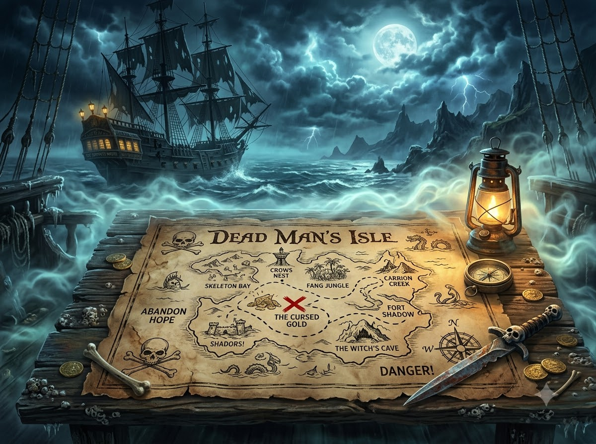

☠️ 저주받은 보물섬의 비밀
12개의 해골 봉인을 풀고 보물상자를 찾아 탈출하세요!

초등 영어 3~6학년 복습 퀴즈 게임입니다.
각 문장을 완성하고 결계를 하나씩 해제하세요!
관문 1 / 12
저주받은 보물섬 탈출
12개의 해골 봉인을 풀고 보물상자를 찾아 탈출하세요!

초등 영어 3~6학년 복습 퀴즈 게임입니다.
각 문장을 완성하고 결계를 하나씩 해제하세요!